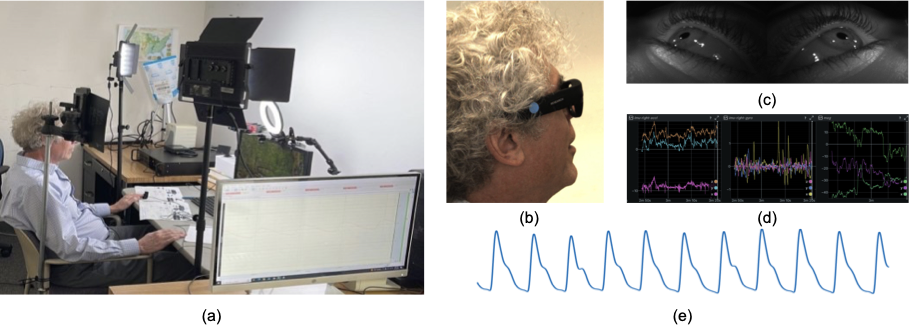
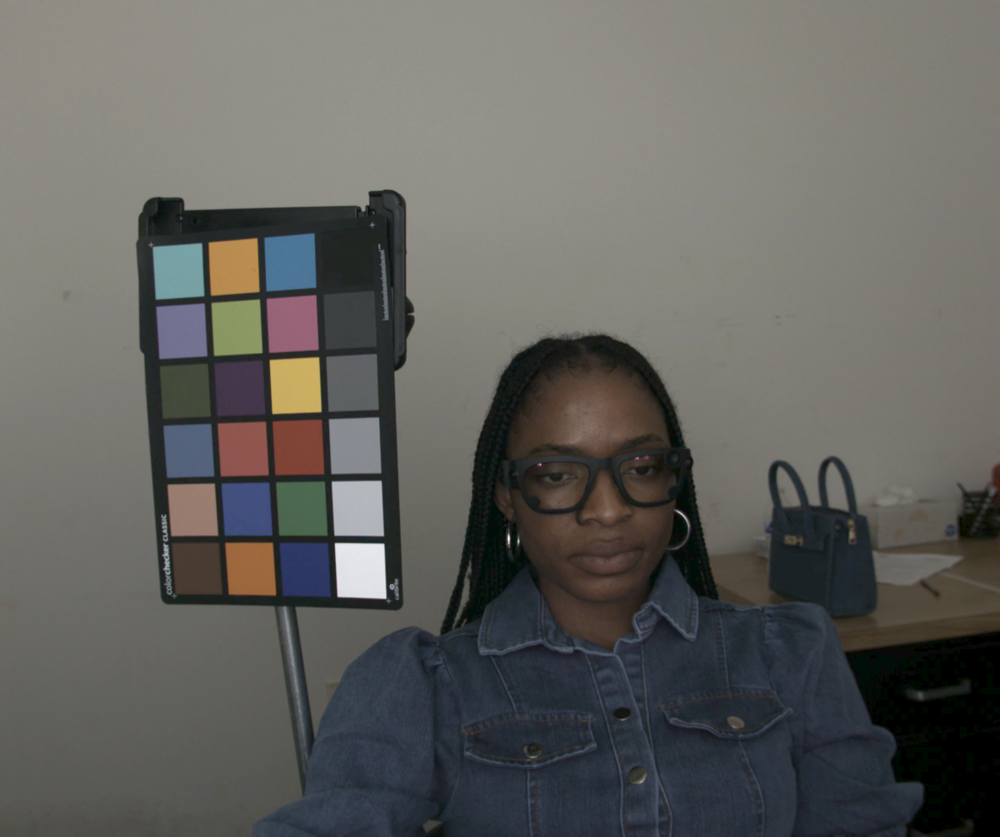
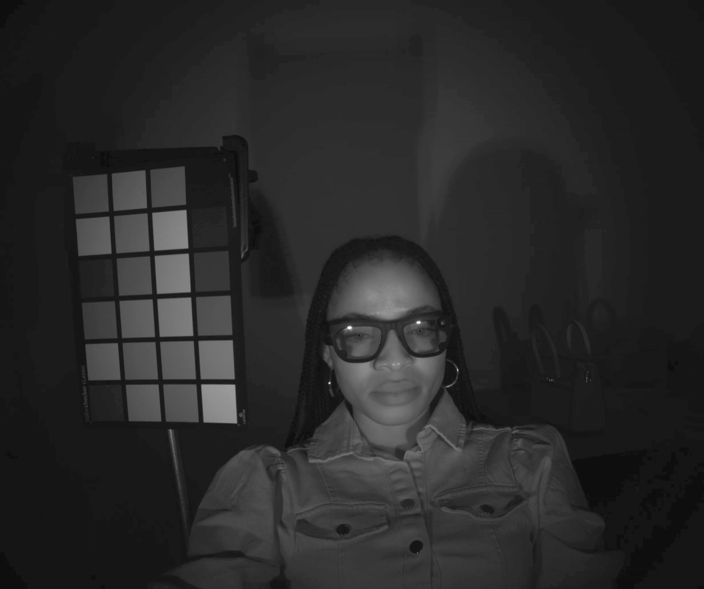
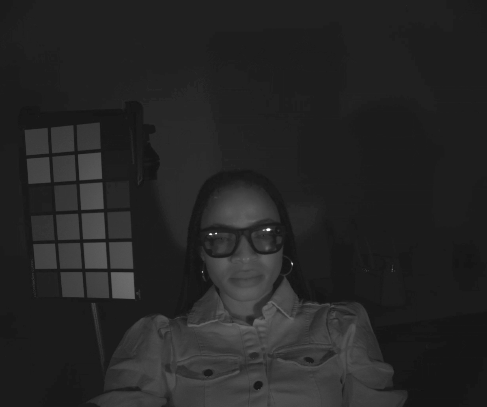
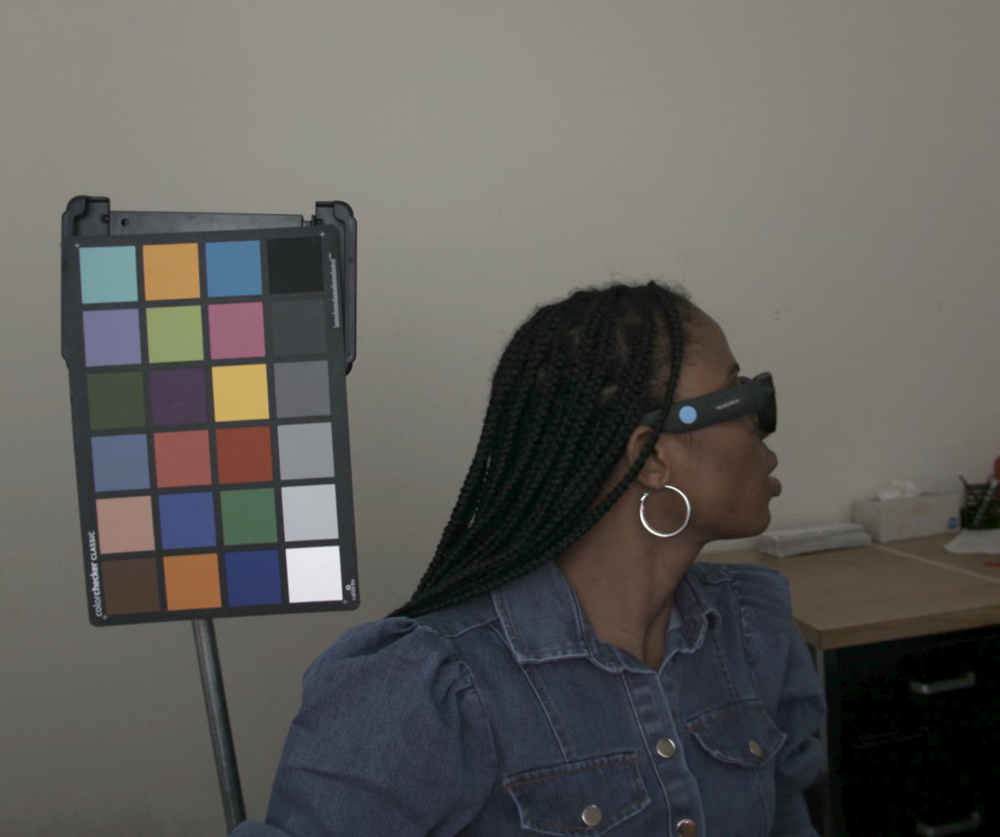
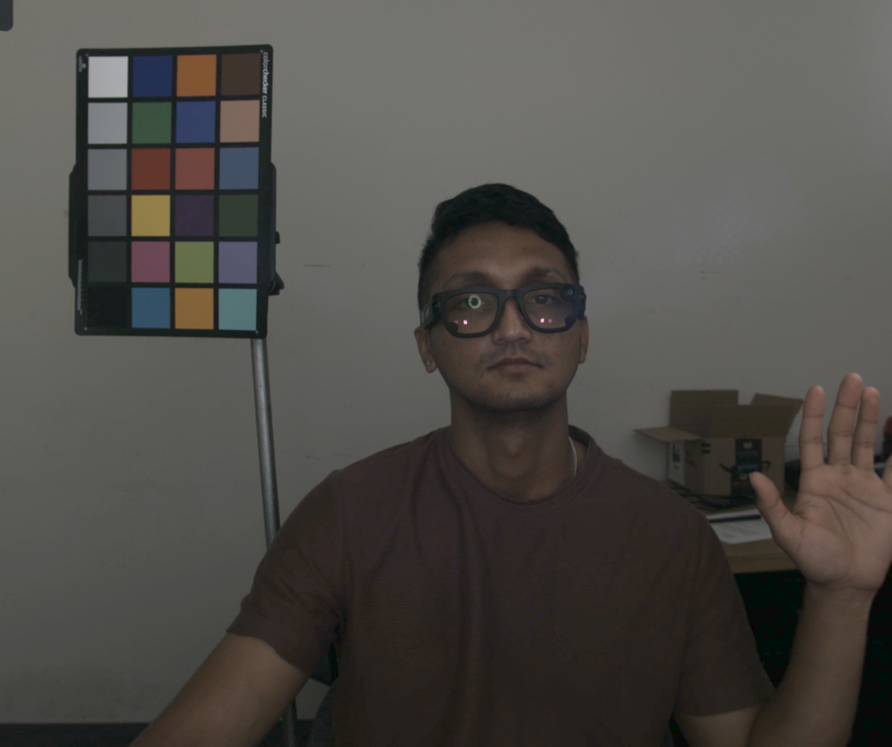
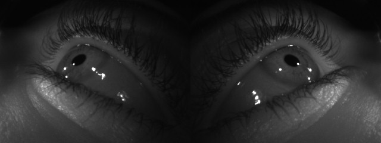
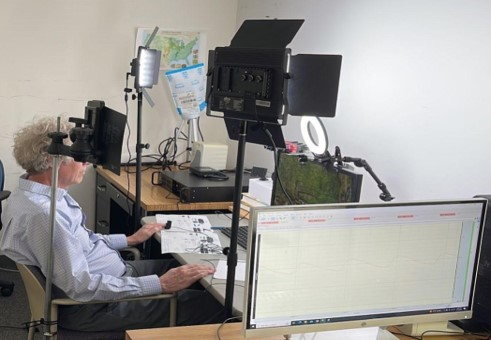
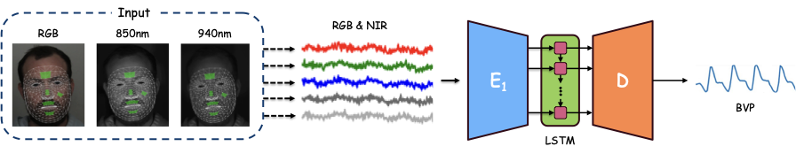
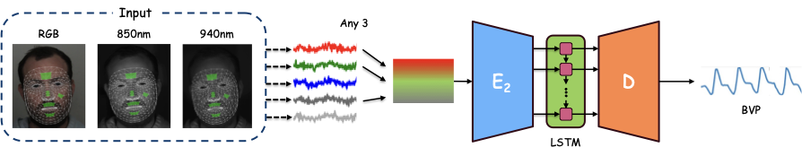

A Temporal Encoder-Decoder Approach to Extracting Blood Volume Pulse Signal Morphology From Face Videos
F. Li, S. Thapa, S. Bhat, A. Sarkar, L. A. Abbott
ECCV 2026

31
participants
RGB + NIR
850 nm and 940 nm cameras
Aria
periocular video, IMU, gaze
BIOPAC
125 Hz fingertip PPG
This paper introduces Tricam-rPPG, a multimodal dataset designed to support systematic studies of remote photoplethysmography (rPPG) using multispectral imaging. Remote, noncontact monitoring offers the potential for unobtrusive measurement of physiological signals related to health, cognitive load, and affect. However, most existing rPPG datasets rely primarily on RGB imaging, limiting the study of spectral effects, illumination variability, and sensing biases associated with differences in optical properties of the skin.
Tricam-rPPG provides synchronized recordings of 31 human subjects from three co-located cameras: a standard RGB camera and two near-infrared cameras operating at 850 nm and 940 nm, all captured under controlled illumination conditions. For fourteen participants, simultaneous recordings from Meta Aria glasses are also included. All cases are supplemented by reference blood volume pulse waveforms measured using a fingertip PPG sensor.
In addition to presenting the dataset, we establish baseline benchmarks with widely used rPPG algorithms to evaluate heart-rate estimation performance across different combinations of spectral channels. By providing synchronized RGB and NIR video together with physiological ground truth, Tricam-rPPG enables new research directions in multispectral physiological sensing, fairness-aware rPPG algorithms, and robust remote cardiovascular monitoring.






The acquisition system uses three co-located cameras mounted on rigid supports: one RGB camera and two monochrome NIR cameras at 850 nm and 940 nm. All camera streams are captured at 2046 x 2464 resolution and 60 fps under controlled illumination. Fingertip PPG is recorded with a BIOPAC MP46 at 125 Hz, and a subset of participants also wore Meta Aria glasses for periocular NIR video, IMU, and gaze data.
Recordings are organized into cool-light and warm-light sessions with tasks spanning resting baseline, mental arithmetic, calm and affective video viewing, side-view posture, raised-hand recording, and reading.

Tricam-rPPG captures physiological variation across controlled illumination, cognitive load, affective stimulation, pose, and body-region changes. Each recording segment lasts at least five minutes to support reliable heart-rate and HRV analysis.
| Session | Lighting | Task | Description |
|---|---|---|---|
| S1 | Cool, 8000 K | T1 | Resting baseline with static fixation at a central cross. |
| S1 | Cool, 8000 K | T2 | Mental arithmetic for cognitive-load induction. |
| S1 | Cool, 8000 K | T3 | Calm video viewing to capture low-arousal responses. |
| S1 | Cool, 8000 K | T4 | Affective video viewing to elicit sadness. |
| S1 | Cool, 8000 K | T5 | Static side-view posture for profile-based facial analysis. |
| S1 | Cool, 8000 K | T6 | Resting baseline with raised hand beside the face for multi-region pulse analysis. |
| S2 | Warm, 2700 K | T1 | Reading task using a passage from Moby Dick. |
| S2 | Warm, 2700 K | T2 | Affective video viewing to elicit excitement. |
Synchronized RGB, 850 nm, and 940 nm streams enable cross-spectral analysis and investigation of melanin-related attenuation in visible and near-infrared bands.
Every case includes fingertip PPG ground truth for heart-rate estimation, waveform recovery, and signal-quality analysis.
Frontal face, profile face, and raised-hand recordings support pose-robust rPPG and cross-region pulse recovery.
The dataset includes facial landmarks, skin maps, PPG landmarks, patch intensity signals, and synchronized Aria data for a participant subset.
The paper evaluates widely used rPPG algorithms through the rPPG Toolbox and reports standard metrics including MAE, MAPE, correlation, and SNR. Experiments include aggregate performance, stratification by self-reported skin tone groups, cross-dataset generalization, and task-level analysis.
The multispectral experiments test channel combinations drawn from RGB, 850 nm NIR, and 940 nm NIR. Adding NIR channels improves signal quality and reduces heart-rate estimation error, with larger gains for higher-pigmentation skin-tone groups while preserving performance for lighter skin tones.


Tricam-rPPG is intended for research use under a data use license. The release includes synchronized camera recordings, PPG waveforms, Aria subset data, landmarks, skin maps, pulse landmarks, and patch intensity signals.
Because the dataset contains human-subject data, access is provided only after execution of a Data Use License (DUL). To request access, please email Abhijit Sarkar and Lynn Abbott. The DUL and access instructions will be sent to approved research requesters.
We thank Ryan Mowri and Ryan Talbot from VTTI for helping with the hardware setup. We thank Gayatri Bhatambarekar, Joe Bekaronov, Jin Woo Baik, and Zeeshan Muhammad Karamat for additional help with data collection. Finally, we thank all the wonderful participants for taking part in the study.
@inproceedings{sarkar2026tricam,
title = {Tricam-rPPG: A Multimodal Multispectral Dataset for Remote Photoplethysmography},
author = {Sarkar, Abhijit and Thapa, Surendrabikram and Khan, Ishtiaque and Deshpande, Yogesh and Li, Fulan and Tyler, Jonathan and Abbott, Lynn},
booktitle = {European Conference on Computer Vision},
year = {2026}
}